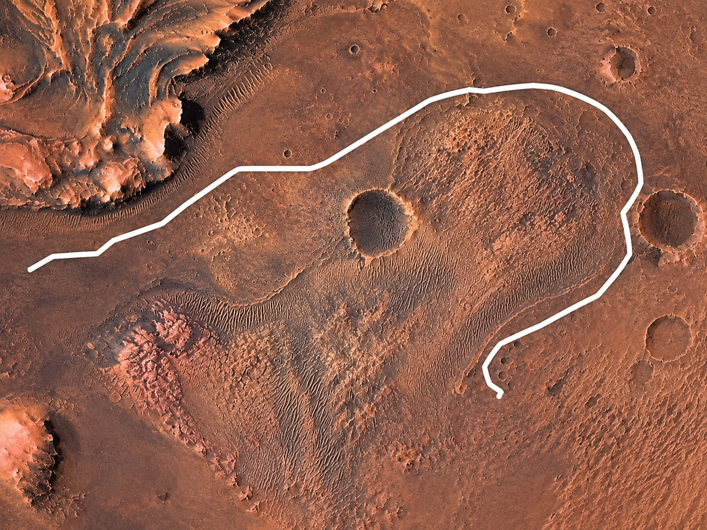
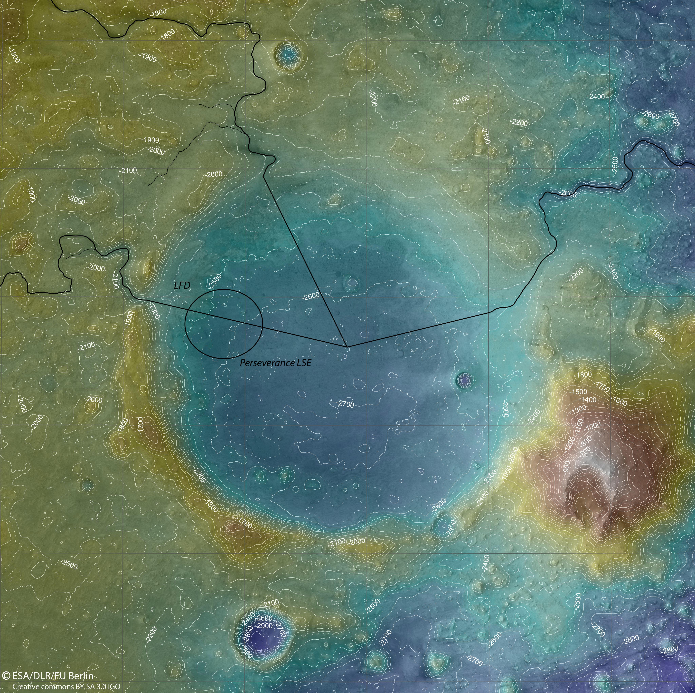

Water
65%
0%100%
Available reserves for consumption and daily activities.
MARS EXPLORATION PROGRAM
The journey was successful. Now, the survivor must manage available resources and carefully plan each proposed mission.
CHECK MISSION STATUS01 / RESOURCE MANAGEMENT
Adjust the available resource levels to assess the possibility of completing an expedition and returning to the shelter.
Available reserves for consumption and daily activities.
Essential reserves to maintain breathing.
Available electricity for equipment and systems.
Available food supplies for the crew.
02 / PLANETARY EXPLORATION
Select an area to explore its characteristics, scientific objectives, and exploration route.


Locations and routes are illustrative. The Starship base location is hypothetical. The geological layer is schematic and not georeferenced.
03 / SCIENTIFIC OBJECTIVES
Each expedition investigates a different area of the Martian environment.
Investigate sandy and rocky terrain, identify accessible areas, and study geological materials.
Document geological materials and study the area associated with the Perseverance sample depot.
Examine sedimentary layers and search for evidence of ancient water-related environments.
Investigate sediments and rocks from the ancient river channel to understand its geological history.
04 / DECISION SYSTEM
The system compares available resources with the estimated requirements for each mission.
Select a mission and press the button to check whether the available resources are sufficient to complete it.
Educational assessment. Resource requirements and safety margins are estimates configured for this project, not actual NASA mission consumption rates.
05 / SCIENTIFIC INFORMATION